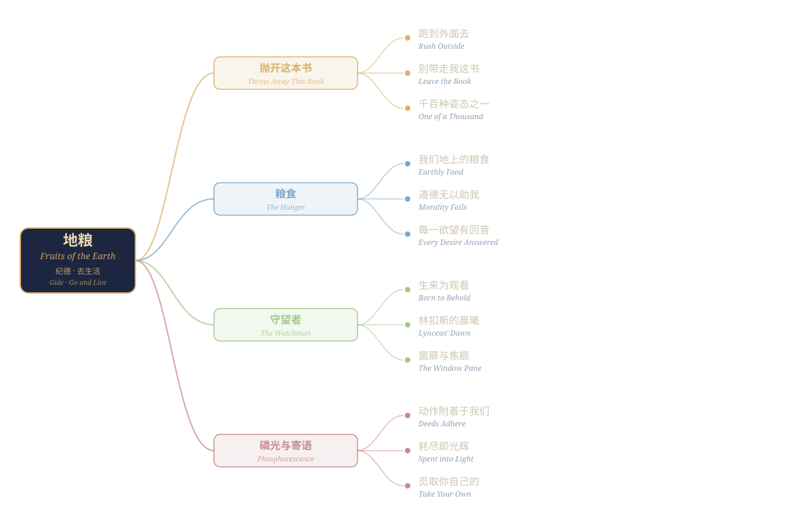

地粮
〇 · 书籍信息
基本信息
| 书名 | 《地粮》——纪德 1897 年出版的散文诗集：游历北非与意大利之后，「以抒情方式，糅合传统的短诗、颂歌、旋曲等形式写成的一连串富有诗意的断想」；献词引《古兰经》「我们地上的粮食正是这些果子」 |
|---|---|
| 作者 | 安德烈·纪德（1869–1951），法国「不安的一代」的精神导师——1947 年获诺贝尔文学奖；本书被奉为「不安的一代人的《圣经》」，影响加缪、萨特整整一代法国青年 |
| 译者序 | 盛澄华 1942 年 11 月写于城固——战时中国的译者与北非的纪德隔着战火对话；「奈带奈蔼」（Nathanaël）这个老译名沿用至今 |
| 体裁 | 散文诗八卷＋引言＋颂歌（代尾声）＋寄语——全书结构近似一场礼拜仪式：呼唤、应答、训诫、祝福 |
| 一句话 | 一册劝你别读它的书——纪德在开头和结尾各劝你一次「抛开这书，去生活」：书的使命是让书失效 |
一 · 核心主题总览
一册散文诗之下，是四组互相咬合的母题：① 书与生活的悖论
引言的命令与寄语的命令首尾同构：「而当你念完时，抛开这本书——跑到外面去！」／「抛开我这书，千万对你自己说：这只是站在生活前千百种可能的姿态之一」——一本书的全部使命是让自己失效：这是世界文学里最彻底的反书写。
② 欲望的正当性
「粮食！我期待着你们，粮食！我的饥饿不能半途而止」——纪德把饥饿、欲望、焦渴全部正名为生命的燃料：「我知道我的每一欲望已有它应得的回音」——欲望不是罪，是尚未兑现的感官权利。
③ 守望者的姿态
卷六题词取自歌德《浮士德》：「生来为观看，矢志在守望」——林扣斯「从钟楼顶上」向晨曦高呼：纪德理想的姿态不是占有世界，是醒着看世界——观看本身就是生活。
④ 行为的磷光
「我们的动作依附着我们，正像磷光依附着磷。它们耗尽我们，那是真的，但它们形成我们的光辉」——自由不是没有代价：动作一经发生便脱离我们，但正是这些耗损构成了灵魂的光度。
二 · 第一段 楔子 · 献词与引言—— 地上的粮食 · 跑到外面去 ——
献词：果子
献给友人莫里斯·基约的题词只有一句：「我们地上的粮食正是这些果子。——《古兰经》卷二章二三」「地粮」的书名由此而来：粮食不在天国，在地上；不在来世，在眼前——这一句立起了全书的唯物神学：把《古兰经》的字句倒过来读，天堂的果子就是地上的果子。
◆ 语言学习 · 法语关键词 · 书名
| Les Nourritures terrestres | 原书名《地粮》——nourriture 既指粮食也指滋养：物质与精神共用一个词 |
|---|---|
| Nathanaël / 奈带奈蔼 | 虚构读者——「我因不知你的真名，才事前给你代取这名字」：写给每一个未来的你 |
引言：跑到外面去
全书纲领只有一句：「而当你念完时，抛开这本书——跑到外面去！我愿它能给你这欲望：离开任何地点，离开你的故乡、你的家、你的居室、你的思想。」注意命令的完整版：不只离开地点，还要离开「你的思想」——纪德要人越狱的监狱包括自己脑子里的那间；1927 年原序里他承认，这是「与家庭决裂」年代的产物。
◆ 语言学习 · 修辞 · 命令式
| 抛 开 | 全书出现两次的动词（引言＋寄语）——首尾同构的钥匙：书是船，不是岸 |
|---|---|
| 别带走我这书 | 连书都不许带走——行李越少，欲望越轻：流浪者的清规 |
卷一：幸福醒来
卷一以波斯诗人哈非士的题词开场：「我懒散的、长期昏睡的幸福醒来了……」随后是全书的神学底线：「别希求在固定的地方找到神。万物都指神，无一能启示神。每种造物使我们与神远离，当我们的目光一固定在它身上。」凝视即遮蔽——任何被固定凝视的对象都会变成偶像：这是《地粮》给一切「寻找」的人的警告。
◆ 语言学习 · 神学 · 反偶像
| 哈非士 | 波斯抒情诗人——纪德以他开场：粮食的谱系来自东方，不是希腊 |
|---|---|
| 万物都指神 | 指针与启示的区分——指月之指非月：固定的凝视恰恰错过 |
三 · 第二段 游历 · 粮食与地名—— 饥饿 · 港口 · 欢情 ——
卷二：粮食！我期待着你们
卷二是全书最响亮的一章：「粮食！我期待着你们，粮食！我的饥饿不能半途而止：不满足总不甘休；道德无以助我只能借饥贫养育我的灵魂。满足！我探寻你们。你们绮丽如夏日之晨曦。」「道德无以助我」——纪德直接把道德请出了粮食的餐桌：灵魂要靠饥饿喂养，不靠戒律喂养；紧接着的宣言是「我知道我的每一欲望已有它应得的回音」。
◆ 语言学习 · 概念 · 欲望
| 饥 饿 | 全书的正面燃料——「借饥贫养育我的灵魂」：饥饿不是缺乏，是能力 |
|---|---|
| 回 音 | 欲望的世界观——每个欲望都有对应的果实：世界是丰盛的，短缺的是勇气 |
卷三：地名短章
卷三以地名为标题一路南下：菩该塞别墅、罗马的花园、拿波利、突尼斯、翁夫勒……最动人的一句写在菩该塞：「每一滴水，每一线光，每一生命，欢情地死去。欢情！这词，我愿不断地反复提到它」。「欢情地死去」——连消逝都要带着欢情：这是全书最接近哲学定义的一句，纪德的美学不是永恒，是 intensity（强度）。
◆ 语言学习 · 地理 · 南方
| 地名标题 | 卷三的形式发明——地理即精神地图：每一站都是一次感官的开学 |
|---|---|
| 欢情（allégresse） | 全书核心词——不是快乐，是欢腾：快乐是状态，欢情是姿态 |
卷四：果子之歌
卷四是一场翡冷翠聚会：美那尔克自述、石榴之歌、无花果、病之旋曲——多声部的散文诗写成室内乐。请歌无花果的夏美纳唱道：「如今请歌无花果，夏美纳，因它的情爱蔽而不显」——「密室中自庆喜节；无香外泄。因未发散，香味成美味」。石榴与无花果都以果实自喻：外壳粗粝或平凡，内里甜蜜——美的价值在果肉，不在果皮。
◆ 语言学习 · 形式 · 多声部
| 美那尔克 | 聚会上的导师形象——全书唯一接近「人物」的存在：他代表智性的一极 |
|---|---|
| 蔽而不显 | 无花果的爱之语法——最深的甜不需要散发香味：内敛的美学宣言 |
四 · 第三段 根与翅膀 · 农庄与守望—— 八扇门 · 林扣斯 ——
卷五：农庄八扇门
卷五回到故乡诺曼底：「多雨的诺曼底；恬静的乡间……」农庄一章用锁匙串起全部空间：「取出你的锁匙，一一地，给我打开每一扇门……第一扇是仓库的门：唉！要是时间是忠实的话！」与卷三的异域对照，卷五写的是根：纪德的翅膀上长着诺曼底的泥土——流浪与故乡不是对立的，同一种欲望的两个方向。
◆ 语言学习 · 意象 · 门
| 八扇门 | 农庄的空间诗学——每一扇门都是一种生活的邀请：故乡不是退路，是粮仓 |
|---|---|
| 锁 匙 | 「一一地」打开——体验的伦理：不许跳读，不许错过任何一间 |
卷六：林扣斯
卷六题词直接引用歌德《浮士德》第二部：「生来为观看，矢志在守望。」随后「我」现身：「奈带奈蔼，我是钟楼的看守者林扣斯。长夜漫漫！从钟楼顶上，晨曦！我向你高呼，永不嫌太绚烂的晨曦！」看守塔楼的人只看、只守——他不占有晨曦，只报知晨曦：这是全书最接近纪德自画像的一章——作家即守望者。
◆ 语言学习 · 互文 · 浮士德
| 林扣斯（Lynceus） | 《浮士德》里的守望者——歌德借希腊神话的千里眼之名：看的职业化 |
|---|---|
| 晨 曦 | 守望者的唯一薪水——「永不嫌太绚烂」：重复的日出，次次都是第一次 |
卷七：窗与渡海
卷七渡海去非洲，热望的对象从粮食扩展到干渴与沙漠；失眠的夜里他向窗告白：「唉！窗扉！多少次我的焦额印在你的玻璃上而得清凉」。窗是守望者的第二道具——隔着一层玻璃看世界：纪德诚实地承认，体验永远有中介；焦额印在玻璃上的凉意，是他给自己的体温计。
◆ 语言学习 · 意象 · 窗
| 窗 扉 | 玻璃的中介性——体验隔着玻璃依然算数：观者的自我辩护 |
|---|---|
| 焦 额 | 发烧的额头——欲望的体温计：纪德把欲望写成病，也写成药 |
五 · 第四段 磷光 · 寄语—— 耗尽即光辉 · 觅取你自己的 ——
卷八：磷光
卷八是全书的哲学重心：「我们的动作依附着我们，正像磷光依附着磷。它们耗尽我们，那是真的，但它们形成我们的光辉。而如果我们的灵魂称得上什么的话，那只因它比别一些人的灵魂燃烧得更热烈。」磷光必须在黑暗中才可见——行为的光辉以耗损为燃料：纪德不悔其欲，但也不回避欲的账单；这一段的诚实，是全书不沦为鸡汤的全部秘密。
◆ 语言学习 · 意象 · 磷
| 磷 光 | 燃烧后的余辉——行为脱离我们，余辉留下：自由的物理记账 |
|---|---|
| 燃烧得更热烈 | 灵魂的定义——不是纯净度，是燃烧度：纪德的灵魂计量学 |
热诚与赤裸
「奈带奈蔼，我将教给你热诚。宁过一种至情的生活，奈带奈蔼，而不求安息。」而热诚的方法论是：「人都可能整个地赤裸；一切情绪都可能达到完满的境地。」「赤裸」指摆脱一切遮蔽的直接生活——不借礼仪、不借传统、不借别人的解释去感受；「忧郁只是消沉后的热诚」：纪德连忧郁都收编为燃料。
◆ 语言学习 · 伦理 · 热诚
| 热诚（ferveur） | 全书教学的终极科目——不是勇敢，是恒温的高强度：对一切事物保持初见 |
|---|---|
| 不求安息 | 至情生活的代价条款——安息是终点站，热诚永远在途上 |
寄语：再抛开一次
全书的收束与引言遥相呼应：「如果我给你把粮食取来，你不会感到饥饿；如果我给你把床铺就，你不会再有睡意。抛开我这书，千万对你自己说：这只是站在生活前千百种可能的姿态之一。觅取你自己的。」「千百种可能的姿态之一」——一本书只是一种活法的样本；《地粮》被奉为「不安的一代人的《圣经》」，而它教的第一课就是：圣经也要扔。
◆ 语言学习 · 结构 · 闭环
| 千百种可能 | 反教条的教条——本书把自己降格为样本之一：谦逊到极致的狂妄 |
|---|---|
| 觅取你自己的 | 全书最后一课——动词是「觅取」不是「接受」：粮食要自己摘 |
六 · 人物图鉴与成长弧线—— 主角配角 · 一张表看穿 ——
主要人物
「我」——全书的说话者——「我懒散的、长期昏睡的幸福醒来了」：一个刚从昏睡里醒来的教导者
奈带奈蔼——虚构读者——「我因不知你的真名，才事前给你代取这名字」：写给每一个未来的你
美那尔克——翡冷翠聚会上的导师——智性的一极：全书唯一接近「人物」的存在
次要人物（功能位）
| 莫里斯·基约 | 献词的受献者——纪德的挚友与同道 |
|---|---|
| 夏美纳 | 卷四歌咏无花果的声部——「因它的情爱蔽而不显」 |
| 林扣斯 | 「我」在卷六的自比——歌德《浮士德》里的守望者 |
| 哈非士 | 卷一题词的波斯诗人——粮食谱系的东方源头 |
七 · 主题与象征—— 每个道具都在说话 ——
| 粮 食 | 书名的总隐喻——一切感官体验皆是粮食：饥饿是能力，不是缺乏 |
|---|---|
| 果 子 | 地上的天堂——「我们地上的粮食正是这些果子」：唯物神学的第一句 |
| 窗 扉 | 体验的玻璃中介——焦额印上去得清凉：观者的诚实 |
| 磷 光 | 行为的余辉——「它们耗尽我们，但它们形成我们的光辉」 |
| 钟 楼 | 守望者的岗位——「生来为观看，矢志在守望」：作家即看塔人 |
| 沙 漠 | 卷七的极限感官——干渴使每一点水都成为幸福 |
八 · 写作手法赏析—— 怎么写，就能怎么学 ——
① 第二人称全书
通篇对「奈带奈蔼」说话——书信体＋布道体的杂交：读者被预先写进书里。
② 首尾同构
引言「抛开这本书」与寄语「抛开我这书」同一命令出现两次——书的使命是让书失效。
③ 地名测绘法
卷三以地名为章节——地理即精神地图：每一站都是一次感官的开学。
④ 多声部果子诗
卷四以石榴、无花果、病之旋曲轮唱——散文诗写成室内乐：形式本身是内容。
九 · 名段欣赏—— 原文精读 · 逐段赏析 ——
十 · 金句摘录—— 12 条 · 中英对照 · 带出处 ——
"我们地上的粮食正是这些果子"—— 献词 · 《古兰经》
"而当你念完时，抛开这本书——跑到外面去！"—— 引言
"我懒散的、长期昏睡的幸福醒来了……"—— 卷一 · 哈非士题词
"别希求在固定的地方找到神。万物都指神，无一能启示神。"—— 卷一
"粮食！我期待着你们，粮食！我的饥饿不能半途而止：不满足总不甘休"—— 卷二
"每一滴水，每一线光，每一生命，欢情地死去。"—— 卷三 · 菩该塞别墅
"如今请歌无花果，夏美纳，因它的情爱蔽而不显。"—— 卷四 · 无花果
"取出你的锁匙，一一地，给我打开每一扇门……"—— 卷五 · 农庄
"生来为观看，矢志在守望。"—— 卷六 · 歌德《浮士德》题词
"奈带奈蔼，我是钟楼的看守者林扣斯。"—— 卷六
"我们的动作依附着我们，正像磷光依附着磷。"—— 卷八
"抛开我这书，千万对你自己说：这只是站在生活前千百种可能的姿态之一。"—— 寄语
十一 · 拓展阅读—— 原文 · 词条 · 译文 ——
原文与文本
- André Gide — Wikipedia —— 生平、1947 年诺奖与「不安的一代」谱系
- Les Nourritures terrestres — Wikipedia —— 1897 年原版与 1927 年原序的增补史
主题与延伸
- Faux-monnayeurs / The Counterfeiters — Wikipedia —— 纪德唯一长篇——与《地粮》并读看他的两条路
- Goethe's Faust — Wikipedia —— 林扣斯之歌的出处——《浮士德》第二部的守望者
十二 · 个人感悟与心得—— 三点心得 ——
果子 · 窗扉 · 磷光
① 书的使命是让书失效
引言与寄语两次命令「抛开这书」——一本真正的好书把你推向生活，而不是扣留你。检验你读过的每一本书：它让你开始做了什么？如果答案是「读下一本书」，你还在船上，没上岸。
② 饥饿是能力，不是缺乏
「道德无以助我只能借饥贫养育我的灵魂」——纪德把欲望正名为燃料。先恢复饿的能力，再谈吃什么：一个对什么都不饿的人，给他满桌粮食也是浪费。
③ 行为的磷光要敢于支付
「它们耗尽我们，那是真的，但它们形成我们的光辉」——自由的账单与光辉是同一张收据。怕耗尽的人最后什么也没剩下：磷在黑暗里的光，正是它烧掉的那部分自己。
—— 纪德死于 1951 年 2 月 19 日，巴黎。他的墓志铭可以就用《地粮》寄语那句：这只是站在生活前千百种可能的姿态之一。
十三 · 一页速查（复习用）
| 全书骨架 | 献词＋引言＋八卷＋颂歌＋寄语：一场完整的精神礼拜——呼唤、应答、训诫、祝福 |
|---|---|
| 核心命题 | 书的使命是让书失效；欲望的正当性；守望者的姿态；行为的磷光 |
| 必读篇目 | 引言 → 卷二（粮食）→ 卷六（林扣斯）→ 卷八（磷光）→ 寄语——五章即能拼出完整的地粮 |
| 三大符号 | 粮食（感官）· 窗扉（中介）· 磷光（耗损） |
| 一句话总结 | 它教你吃饭，然后叫你放下它去生活 |
十四 · 全书思维导图—— 一图纵览 ——

一图纵览全书骨架 · 中英双语对照 · 手机端可左右滑动查看全图